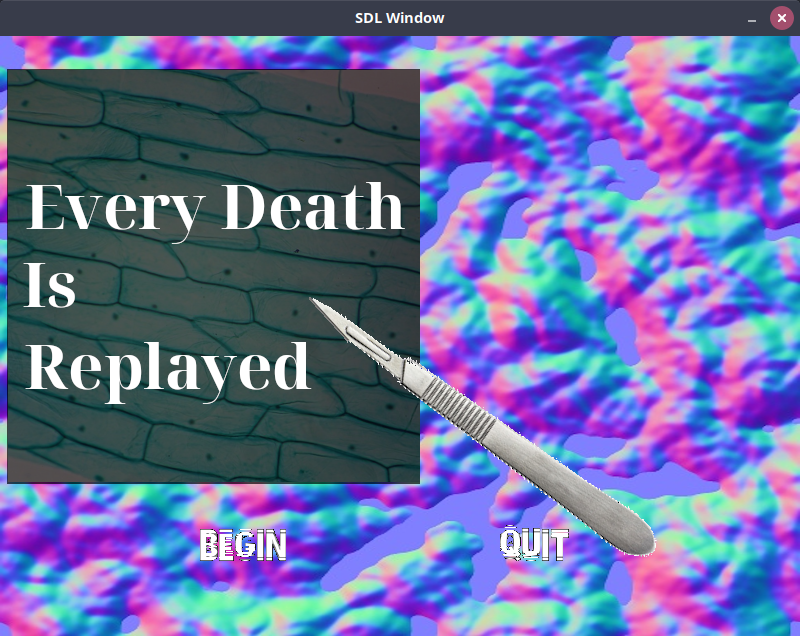

My submission for the SNHU CS Hangout Winter Jam 2021. This is a horror-ish game about medical failures, using real life events. Downloadable from the itch.io page or Bitbucket.
Articles used:
Programmed in C++ with the following libraries used:
Compiled With MinGW 32-bit for windows, gcc 8.2.0. Also briefly tested on Ubuntu 20.04. Source code available at https://bitbucket.org/williamblair/ozzadarjamjan2022/src/master/
Screenshots:
